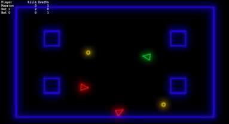

Experimenting with deterministic lockstep multiplayer
22-12-2017 Filed in: Experiments
Years ago I created an experimental multiplayer game using the Unity engine. It couldn’t be simpler:
- Just control a sphere to try and push the other spheres out of the “arena”;
- Use Unity to do all the physics heavy lifting;
- Just sync the rigidbodies across clients.
- It never worked. And I now understand why it never worked.
Deterministic physics engines and lockstep engines
Out of the box, Unity physics are not deterministic. This is great! Because it’s simple to use, it looks good and its fast. It just means that you can’t use it for a networked physics based game in a naive way (like I did). And I really want to make a physics based multiplayer game. So how can I make my physics based, networked multiplayer game? Typically there are two solutions:- Use an authoritative server or client: simply put, all physics is simulated on the server (if present) or one of the clients. Then sync the results of the simulation to all other clients;
- Use a lockstep mechanisme with a deterministic physics engine.
For my previous experiment I actually tried to implement solution 1. However, the code required became really convoluted really fast because you constantly need to implement two cases: a client is authoritative and thus running the physics simulation or not and only showing visuals. Also, the authoritative client always had an advantage due to network latency, because it saw the results of the physics simulation before other clients and processing of input was fasted.
I learned about the second approach a few weeks ago in a presentation from Photon Networks, who provide a Unity lockstep solution: TrueSync. The idea behind a deterministic physics and lockstep networking is to have all clients run a local simulation of the game and only exchange (player) input. The lockstep mechanism makes sure that the simulation only advances if the input of all players is available in all clients. This way, all clients share the same input state. The deterministic physics engine makes sure that the state of each physics transition will be exactly the same on each client. This prevents the simulation from going out of sync, especially over longer play times. There is a lot more going on regarding input lag compensation, but this is the basic idea.
The remainder of this post goes into my experiences with this solution.
Learning TrueSync
Start with the excellent tutorial on the TrueSync website. This gives you a quick overview of what it means to use TrueSync and (more importantly) write deterministic code. You’ll make a simple “dueling” game where you control a cube that can shoot the other cubes.
Go try it out.
My experimental game

The example on the TrueSync was already pretty close to the type of game I wanted to make. I wanted to make a physics controlled arcade arena shooter. I drafter the following requirements:- Physics based controls (i.e. apply forces to your spaceship);
- 2D and only one screen;
- 2-4 players;
- If there are fewer that 4 human players, add bots to fill in the empty player slots;
- Keep track of deaths and kills;
- Respawn delay.
As indicated the example on the TrueSync site already is a good start in this direction. However, after adapting the example to my requirements, I actually learned quite a few things that might be useful to you as well if you consider using TrueSync (or similar solution).
A few requirements were very simple to implement
Going from cubes to sprites is not very difficult. Changing the camera to look over the play are and confining the play area is not very challenging either. Going from kinematic rigidbodies to force controlled rigidbodies is pretty straightforward also. I won’t go into the details of these changes.
Physics based controls – missing convenience functions
TrueSync contains both a deterministic 3D as well as a deterministic 2D engine. It’s important to know that the 2D engine is not as refined as the 3D engine. Both implement the basics you need from a physics engine: rigidbodies, colliders, forces, velocity, weight, etc. The big difference is that the 2D version lacks many of the convenience functions available in the 3D engine. Here are two examples:
Adding bots
Less than four player, add bots to fill the missing spots? How do you do that when there is no real masterclient in TrueSync? Additional requirements: this should also work in offline mode. My solution is based on the following properties of the TrueSync engine:
- The first player to join always has owner.Id == 1;
- In offline mode, owner.Id == 0.
See the following code from the SpawnBots.cs class:
(note: the matchmaking menu sets the PlayerPrefs variable “BotCount”.
So, now you have bots. There is a problem though: these bots are associated with the client and thus the player that spawned them. This means you can’t base score simply on the bot’s owner: that player would be killed a lot and get a lot of free kills (based on the AI quality of the bots of course). I solved this using tags. There is probably a more elegant solution, but this one was simple to implement, especially within the limited scope of this game. See the following code from the Projectile.cs class:
Keep track of deaths and kills
The example on the TrueSync site keeps track of deaths. But I also want to track kills. Because some of the actors in the game are bots, using the TrueSyncBehaviour.owner property doesn’t work correctly. I created a simple class PlayerActor.cs that keeps track of score data:
The Projectile.cs class has a reference to the GameActor that spawned the projectile (and thus owns it):
Respawn delay
This one was by far the most complex to implement. Because, the usual solution would be to use some sort of CoRoutine to handle the timer and respawning. CoRoutines however in Unity are not deterministic. TrueSync has you covered there, but it only supports waiting for a fixed amount of time. Like this:
yield 3.0fThis works fine, unless you want to display something like a respawn timer (which I off course want). My solution was to use the old school timer solution in the TrueSync update loop in the GameActor.cs class:
Conclusion
Using TrueSync and writing deterministic code was a lot less difficult than I imagined. For me I think this will be my preferred way of doing multiplayer games as the code itself is pretty similar to single player code. Apart from the topics I mentioned above, the main thing to keep in mind is to make sure your code remains deterministic. This means use the Fixed Point math alternatives TSVector, TSQuaternion, FP (for float/double), TSRandom in your code consistently.
If you want to take a look at the project, you can find it here: https://bitbucket.org/maarten_engels/truesynctest